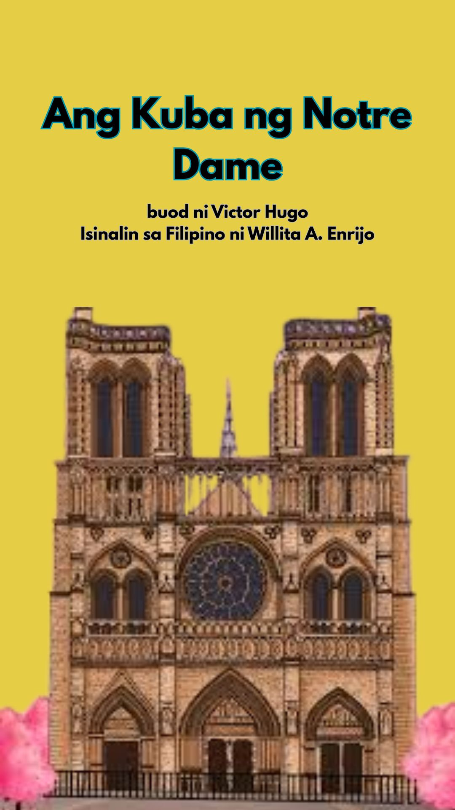
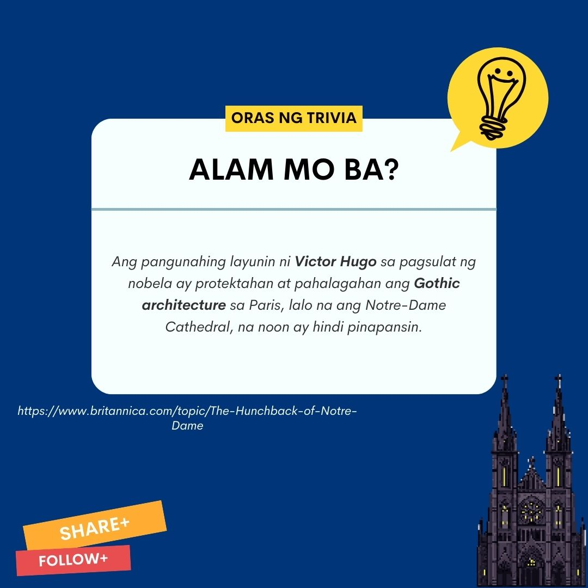
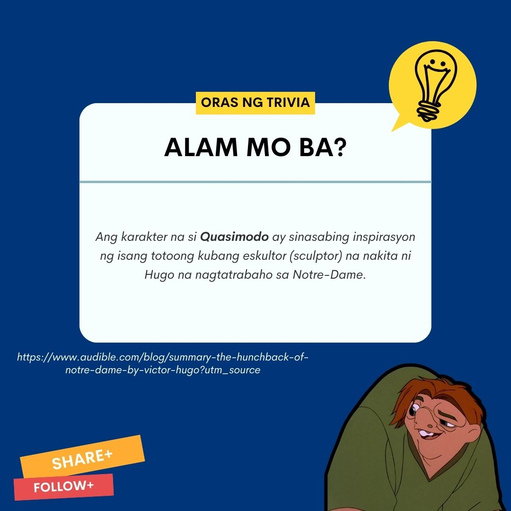
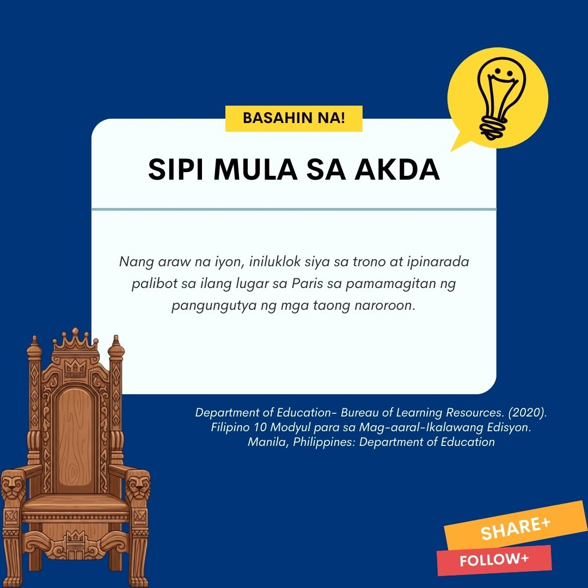
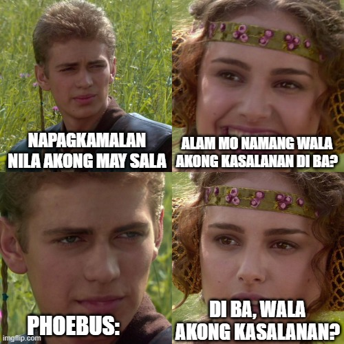
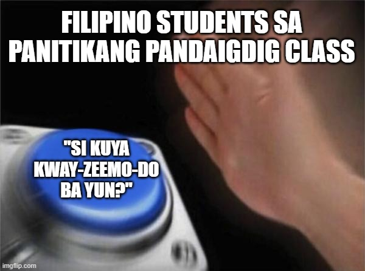
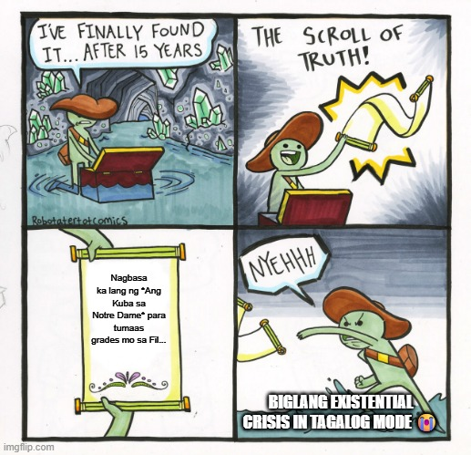
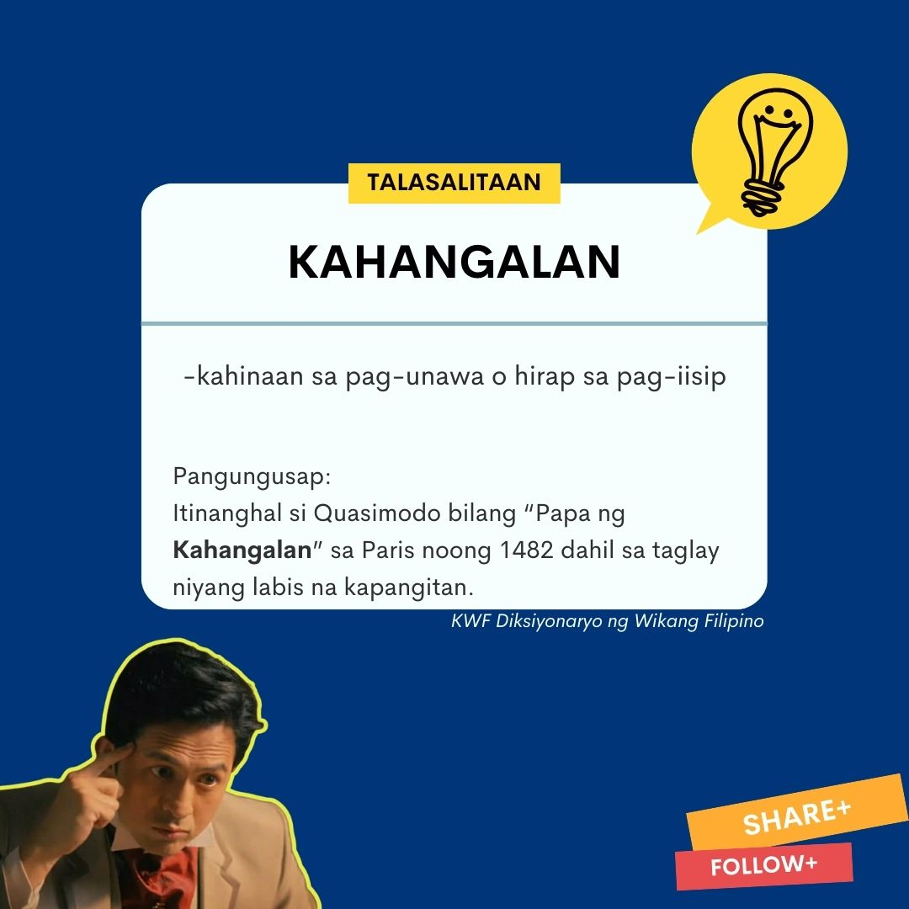
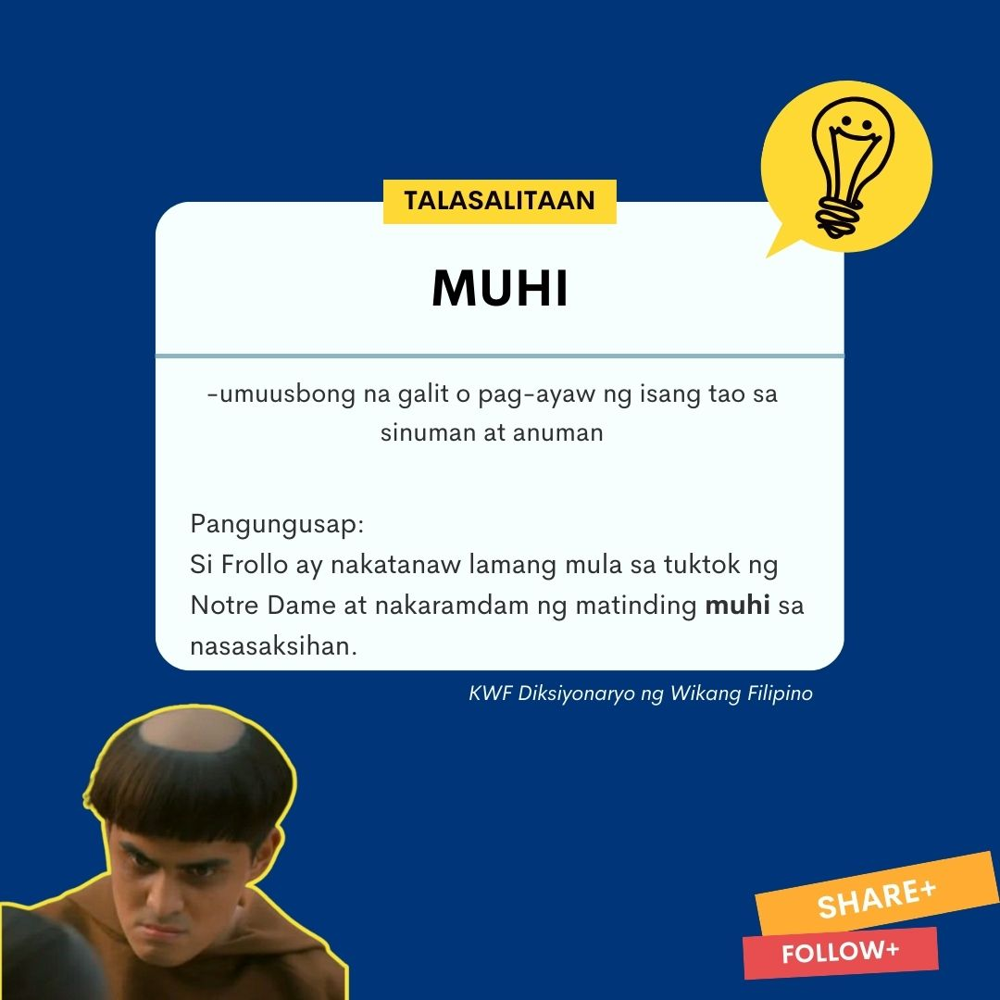
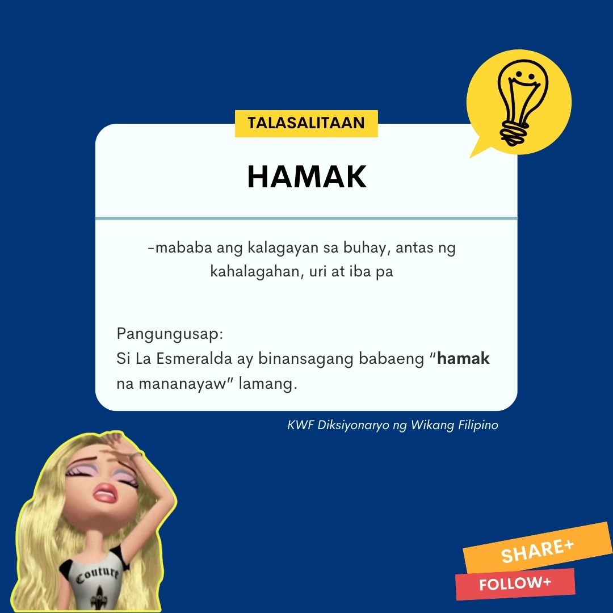

Sanggunian - 2020: Buod "Department of Education- Bureau of Learning Resources. Filipino 10 Modyul para sa Mag-aaral-Ikalawang Edisyon. Manila, Philippines: Department of Education
buod ni Victor Hugo
Isinalin sa Filipino ni Willita A. Enrijo
Sa isang malawak na espasyo ng Katedral, nagkikita-kita ang mamamayan upang magsaya para sa “Pagdiriwang ng Kahangalan” na isinasagawa taon-taon. Taong 1482, nang itanghal si Quasimodo bilang “Papa ng Kahangalan.” Nang araw na iyon, iniluklok siya sa trono at ipinarada. Naroroon si Pierre Gringoire, ang nagpupunyaging makata at pilosopo ng lugar. Hindi siya naging matagumpay na agawin ang kaabalahan ng mga tao sa panonood ng nasabing parada. Malaki ang kaniyang panghihinayang sapagkat wala man lang nagtangkang manood ng kaniyang inihandang palabas.
Habang isinasagawa ang panunuya kay Quasimodo, dumating ang paring si Claude Frollo at ipinatigil ang pagdiriwang. Inutusan niya si Quasimodo na bumalik sa Notre Dame kasama niya. Sa paghahanap ng makakain, nasilayan ni Gringoire ang kagandahan ni La Esmeralda-ang dalagang mananayaw. Ipinasiya niyang sundan ang dalaga sa kaniyang pag-uwi. Habang binabagtas ng dalaga ang daan, laking gulat niya nang sunggaban siya ng 2 lalaki-sina Quasimodo at Frollo. Sinubukang tulungan ni Gringoire ang dalaga subalit hindi niya nakaya ang lakas ni Quasimodo kung kaya’t nawalan siya ng malay. Dagli namang nakatakas si Frollo. Dumating ang ilang alagad ng hari sa pangunguna ni Phoebus- ang kapitan ng mga tagapagtanggol sa kaharian. Dinakip nila si Quasimodo.
Samantala, hatinggabi na nang pagpasiyahan ng pangkat ng mga pulubi at magnanakaw na bitayin si Gringoire. Lumapit si La Esmeralda sa pinuno ng pangkat at nagmungkahing huwag ituloy ang pagbitay sapagkat handa siyang magpakasal sa lalaki sa loob lamang ng apat na taon. Mailigtas lamang ang buhay ni Gringoire sa kamatayan. Nang sumunod na araw, si Quasimodo ay nilitis at pinarusahan sa tapat ng palasyo sa pamamagitan ng paglatigo sa kaniyang katawan.
Matindi ang sakit ng bawat latay ng latigo na ipinapalo sa kaniyang katawan. Matindi ang sakit sa kaniyang pagdurusa. Ang lahat ng iyon ay kagustuhan at ayon sa kautusan ni Frollo-na kailanman ay hindi niya nagawang tutulan dahil sa utang na loob. Nagmakaawa siya na bigyan siya ng tubig subalit tila bingi ang mga taong nakatingin sa kaniya- na ang tanging gusto ay lapastanganin at pagtawanan ang kaniyang kahabag-habag na kalagayan.
Dumating si La Esmeralda, lumapit ang dalaga sa na may hawak na isang basong tubig. Pinainom siya. Samantala, sa di kalayuan ay may babaeng baliw na sumisigaw kay La Esmeralda.
Tinawag siya ng babaeng “hamak na mananayaw” at “anak ng magnanakaw.” Kilala ang babae sa tawag na Sister Gudule. Siya ay pinaniniwalaan na dating mayaman subalit nawalan ng bait nang mawala ang anak na babae, 15 taon na ang nakalilipas. Makaraan ang ilang buwan, habang si Esmeralda ay sumasayaw sa tapat ng Notre Dame ay napagawi ang mga mata ni Phoebus sa mapang-akit na kagandahan nito. Nang mapuna ni La Esmeralda si Phoebus ay napaibig dito ang dalaga. Tila siya nawalan ng ulirat nang kaniyang marinig ang paanyaya ng binata na magkita sila mamayang gabi upang lubos na magkakilala. Si Frollo ay nakatanaw lamang mula sa tuktok ng Notre Dame at nakaramdam ng matinding panibugho sa nasasaksihan.
Ang kaniyang matinding pagnanasa kay La Esmeralda ay nag-udyok sa kaniya na talikuran ang Panginoon at pag-aralan ang itim na mahika. Mayroon siyang masamang balak. Nais niyang bihagin ang dalaga at itago sa kaniyang selda sa Notre Dame. Nang sumapit ang hatinggabi, sinundan niya si Phoebus sa pakikipagtipan kay La Esmeralda.
Habang masayang nag-uusap ang bagong magkakilala ay biglang sumunggab ng saksak kay Phoebus ngunit mabilis siyang naglaho. Hinuli ng mga alagad si La Esmeralda sa pag-aakalang siya ang may kagagawan ng paglalapastangan sa Kapitan. Matapos ang paglilitis, sapilitang pinaako kay La Esmeralda ang kasalanang hindi niya ginawa. Pinaratangan din siyang mangkukulam. Siya ay nasistensiyahang bitayin sa harap ng palasyo.
Dinalaw siya ni Frollo sa piitan at ipinagtapat ang pag-ibig sa kanya. Nagmakaawa ang pari na mahalin din siya at magpakita man lang kahit kaunting awa. Subalit tinawag lamang siya ni La Esmeralda ng tiyanak na monghe at pinaratangang mamamatay-tao. Tumanggi siya sa lahat ng alok ni Frollo. Bago ang pagbitay, iniharap si La Esmeralda sa maraming tao sa tapat ng Notre Dame upang kutyain. Napansin ng dalaga ang anyo ni Phoebus kaya isinigaw niya ang pangalan ng binata.
Si Phoebus ay nakaligtas sa tangkang pagpatay sa kaniya. Tumalikod siya na tila walang naririnig at tinunton ang bahay ng babaeng kaniyang pakakasalan.Ilang sandali, dumating si Quasimodo galing sa tuktok ng Notre Dame patungo kay La Esmeralda gamit ang tali. Hinila niya paitaas ang dalaga patungo sa katedral at tumatangis na isinisigaw ang “Santuwaryo!” Si Quasimodo ay napaibig kay La Esmeralda nang araw na hatiran siya nito ng tubig sa panahong wala man lang nagnasang tumulong sa kaniya. Matagal na niyang pinagplanuhan kung paano itatakas ang dalaga. Batid nito na magiging ligtas ang dalaga sa katedral. Sa mga araw na magkasama sila, mahirap para sa dalaga na titigan ang pangit na anyo ni Quasimodo ngunit di nagtagal ay naging magkaibigan ang dalawa.
Lumusob sa katedral ang pangkat ng mga taong palaboy at magnanakaw- sila ang kinikilalang pamilya ni La Esmeralda. Naroon sila upang sagipin ang dalaga sapagkat narinig nila mula sa parliamentaryong kautusan na paaalisin sa katedral ang dalaga. Samantala, inakala ni Quasimodo na papatayin ng mga lumusob ang dalaga kaya itinakas niya ito. Malaking bilang ng mga lumusob ang napatay niya.
Habang nagkakagulo, sinamantala ni Frollo na makalapit kay La Esmeralda. Nag-alok siya ng 2 pagpipilian ng dalaga: ang mahalin siya o ang mabitay? Mas pinili ng dalaga ang mabitay kaysa mahalin ang hangal na katulad ni Frollo. Iniwan niya ito kasama si Sister Gudule. Labis ang pagkamangha ng 2 nang matuklasan na sila ay mag-ina. Nakilala ni Sister Gudule si Esmeralda dahil sa suot na kwintas nito. Ito ang kaniyang palatandaan na suot ng kaniyang anak bago ito mawala. Ninasa niyang iligtas ang anak ngunit huli na ang lahat.
Nang mabatid ni Quasimodo na nawawala si La Esmeralda, tinunton niya ang tuktok ng tore at doon hinanap ang dalaga. Sa di kalayuan, napansin niya ang anyo ng dalaga. Ito ay nakaputing bestida at wala nang buhay. Labis na galit ang naramdaman ni Quasimodo kay Frollo na batid niyang may matinding pagnanasa sa dalaga kaya pinuntahan niya ito at inihulog mula sa tore-ang paring kumupkop sa kaniya. Habang nakatitig naman sa wala nang buhay na katawan ng dalaga, sumigaw siya: “walang ibang babae akong minahal.”
Mula noon hindi na muling nakita si Quasimodo. Matapos ang ilang taon, nang matagpuan ng isang lalaking naghuhukay ng puntod ang libingan ni La Esmeralda, nasilayan niya ang hindi kapani-paniwalang katotohanan- nakayakap sa kalansay ng kuba ang katawan ng dalaga.








